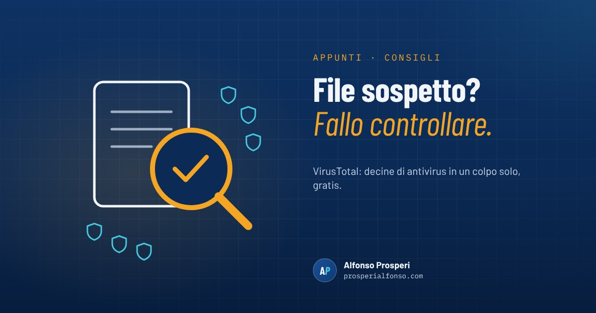

Una mail con un allegato che non aspettavi, un link arrivato su WhatsApp da un numero sconosciuto, un programma scaricato da un sito che non conosci. Prima di aprirli, c'è un modo semplice per farli controllare: VirusTotal.
Cos'è
VirusTotal è un servizio online gratuito, di proprietà di Google, che analizza file e indirizzi web con decine di antivirus e strumenti di sicurezza contemporaneamente. Invece di affidarti al parere di un solo antivirus, vedi in un colpo solo cosa ne pensano tutti gli altri.
Come si usa
- Apri virustotal.com dal computer o dal telefono.
- Scegli File per caricare un allegato, oppure URL per incollare un link.
- Aspetta qualche secondo: compare il risultato dell'analisi.
Come leggere il risultato
- Nessun motore lo segnala: buon segno, anche se non è una garanzia assoluta. Un file nuovissimo potrebbe non essere ancora conosciuto.
- Uno o due motori lo segnalano: può essere un falso allarme, ma se il file arriva da uno sconosciuto meglio non aprirlo.
- Molti motori lo segnalano: è quasi certamente pericoloso. Cancellalo e non cliccare il link.
VirusTotal non pulisce il computer: ti dice solo se un file o un link sono sospetti. Se pensi di aver già aperto qualcosa di pericoloso, fai una scansione completa con l'antivirus e cambia le password importanti da un altro dispositivo.
Attenzione alla privacy
Questo è il punto che pochi conoscono: i file caricati su VirusTotal possono essere visti dai ricercatori e dalle aziende di sicurezza che collaborano con il servizio. Quindi non caricare mai documenti personali o di lavoro, come buste paga, contratti, fatture, foto di documenti. Per un allegato di cui non sei sicuro, va benissimo; per un file con dati tuoi, no.
In pratica
- Allegato inatteso, anche da un contatto conosciuto: controllalo o chiedi conferma a chi lo ha mandato con un altro mezzo.
- Link in un SMS o in una chat: incollalo su VirusTotal senza aprirlo.
- Programma scaricato da un sito poco noto: controllalo prima di installarlo.
Per altre abitudini utili contro le truffe, puoi leggere anche le protezioni anti-truffa di Android e cosa fare a casa contro gli attacchi informatici.